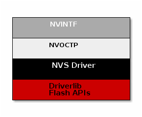
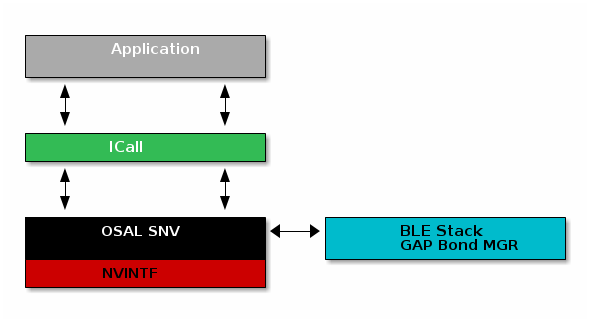

Flash¶
The flash is split into erasable pages of 8kB. The various sections of flash and their associate linker files are as follows.
- Flash Reset Vector Table: This table holds the first 16 reset vectors that are critical for booting up the device. These vectors are set at build time and cannot be dynamically changed. See Flash Vector Table below for more information.
- Simple NV (SNV) Area: used for nonvolatile memory storage by the GAP Bond Manager and also available for use by the application. See Non-Volatile Storage Architecture for configuring SNV.
For projects where the stack project builds a library:
- Application and Stack Image Code Space: A single region that contains both application and stack code in flash. This image is configured in the linker configuration file of the application: <device name>_app_and_stack.icf (IAR) and <device name>_app.cmd (CCS).
Flash Vector Table¶
This table contains the first 16 critical interrupt vectors required for the bootup process. The location of this table is controlled by m3Hwi.resetVectorAddress within the TI-RTOS config file (*.cfg), it defaults to address 0x00000000. At bootup time, the TI-RTOS kernel will run a first function to initialize the Hwi module. At this time the flash vector table will be copied to the RAM location shown in Table 8. and the VTOR register will be moved to point to the RAM table. For more information about the vector table format, please refer to Cortex-M3 Vector Table.
For more information on the kernel boot process and first functions, please see: SYS/BIOS Boot Wiki.
Non-Volatile Storage Architecture¶
This section will describe the non volatile storage system that is implemented and used on the CC26x2. This system provides access to non volatile storage that can be safely shared between the user application and the protocol stack.
The system has the following properties and offers the following features:
- Thread safe access to non volatile memory
- ID based system that decouples a storage item from its address in memory
- Space efficient storage with automatic compaction
- Power loss tolerant data preservation
The implementation of this software system relies on several layers which are illustrated below.
Non Volatile Interface (NVINTF)¶
The NVINTF is an abstraction layer that defines a common set of APIs for interacting with non volatile memory using a ID system. This common set of APIs allow for new methods of NV storage to be implemented without changing the API calls in the stack and application. The ID system is most efficient because it decouples the data stored from its address in flash. This is necessary because flash banks must have the entire sector erased before writing again. (with the exception of clearing a bit). Using the ID system, when an NV item needs to be updated, it can simply be invalidated and stored again at a different address. Once the NV system becomes full of unused items, a compaction will occur. A compaction is the removal of unused items.
The NVINTF is function pointer based, each underlying transport must plug a function table and provide an implementation for the common set of APIs.
This interface is defined in nvintf.h. The NVINTF is not intended to be
changed by the customer, but instead used as is.
Two Page Non Volatile Memory On Chip (NVOCTP)¶
NVOCTP is an implementation of the NVINTF that uses two flash pages to store
NV data. The design is such that a single page is active at a given time and
when that page is at the compaction threshold, a compaction is performed and the
other page will become the active page. With two pages in use, the system is
protected against power loss during compaction. The implementation of the two
page system is done in nvoctp.c. The stack will use this implementation by
default.
NVOCTP also defines an NV header that is used by every entry in the NV.
This header is implemented by NVOCTP_itemHdr_t and is defined as below.
The header is used to determine the integrity of an item and whether it is in
use.
Non Volatile Storage (NVS) Driver¶
The NVS driver provides reentrant functions for writing to and reading from flash. It also provides a common interface to both internal and external flash. More information can be found in the TI Drivers documentation. The stack will use internal NV, currently this is all that is supported.
Non Volatile Storage with the BLE-Stack¶
The BLE-Stack implements some additional layers on top of the NVINTF. These additional layers define the recommended interaction between BLE enabled applications, the BLE-Stack, and the NVINTF implementation.
The additional layers required when using BLE stack are listed below:
- ICall: NV interactions occur in stack thread facilitated by ICall
- OSAL SNV: A wrapper on top of the NVINTF that defines a NV tag structure for BLE
The figure below shows the architecture of the entire system.
OSAL Simple NV (OSAL SNV)¶
The GAP Bond Manager will use OSAL SNV for storing persistent data, such as
encryption keys from bonding. The OSAL SNV layer is implemented via a simple
wrapper that defines a higher level structure on top of the existing
NVINTF_itemID_t structure. At a high level this simply maps the
osalSnvId_t that is used by the stack to NVINTF_itemID_t that is used
by the NVINTF layer. It will always use NVINTF_SYSID_BLE when storing
OSAL SNV data. The ID system implemented is detailed below. By default, the IDs
available to the customer are defined in bcomdef.h as shown in
Listing 93.
1 2 3 4 5 6 7 8 9 10 11 12 13 14 15 16 17 18 | // Device NV Items - Range 0 - 0x1F
#define BLE_NVID_IRK 0x02 //!< The Device's IRK
#define BLE_NVID_CSRK 0x03 //!< The Device's CSRK
#define BLE_NVID_ADDR_MODE 0x04 //!< The Device's address type (@ref GAP_Addr_Modes_t)
#define BLE_LRU_BOND_LIST 0x05 //!< The Device's order of bond indexes in least recently used order
#define BLE_NVID_RANDOM_ADDR 0x06 //!< The Device's random address if set by the current @ref GAP_DeviceInit
// Bonding NV Items - Range 0x20 - 0x5F - This allows for 10 bondings
#define BLE_NVID_GAP_BOND_START 0x20 //!< Start of the GAP Bond Manager's NV IDs
#define BLE_NVID_GAP_BOND_END 0x5f //!< End of the GAP Bond Manager's NV IDs Range
// GATT Configuration NV Items - Range 0x70 - 0x79 - This must match the number of Bonding entries
#define BLE_NVID_GATT_CFG_START 0x70 //!< Start of the GATT Configuration NV IDs
#define BLE_NVID_GATT_CFG_END 0x79 //!< End of the GATT Configuration NV IDs
// Customer NV Items - Range 0x80 - 0x8F - This must match the number of Bonding entries
#define BLE_NVID_CUST_START 0x80 //!< Start of the Customer's NV IDs
#define BLE_NVID_CUST_END 0x8F //!< End of the Customer's NV IDs
|
Additionally it will set a compact level via the GAP Bond Manager which
defaults to 80%. This is set by the NV_COMPACT_THRESHOLD define.
By default, osalSnvId_t and osalSnvLen_t are type defined as uint8. To use uint16-type definitions, define the preprocessor symbol OSAL_SNV_UINT16_ID in both the application and stack projects.
This layer is implemented by osal_snv_wrapper.c.
Limitations and Intended Use¶
The following limitations apply to those using NV alongside the BLE5-Stack.
- NV inmplementations (i.e. NVOCTP) must not be used directly, instead the application should access NV through OSAL SNV. See Using SNV Example Code
- The application must be careful to only use IDs in the range defined by Listing 93.
- The application cannot access the NV regions reserved by the stack directly or the internal structure may be corrupted.
- When using NVOCTP, the memory allocated for internal NVS access must be two pages of contiguous memory.
- Since OSAL SNV exists on the stack side of ICall, an application that uses OSAL SNV must be ICall enabled.
- OSAL SNV operations must be called from a task context and not a Hwi or SWI context.
OSAL SNV API Set¶
SNV can be read from or written to using the following APIs.
uint8 osal_snv_read( osalSnvId_t id, osalSnvLen_t len, void *pBuf)
| Read data from NV | |
| Parameters | id - valid NV item len - length of data to read pBuf - pointer to buffer to store data read |
| Returns | Status as defined in nvintf.h |
uint8 osal_snv_write( osalSnvId_t id, osalSnvLen_t len, void *pBuf)
| Write data to NV | |
| Parameters | id - valid NV item len - length of data to write pBuf - pointer to buffer containing data to be written. All contents are updated at once. |
| Returns | Status as defined in nvintf.h |
OSAL SNV Example¶
Listing 94. shows how to read and write an array of bytes from SNV flash:
/*********************************************************************
* GLOBAL VARIABLES
*/
#include <icall_ble_api.h> // OSAL SNV operations are defined through ICALL
// ...
#define BUF_LEN 4
#define SNV_ID_APP 0x80
// Assuming Two Button menu is used
#define SP_NVS_DEBUG (TBM_ROW_APP + 10)
uint8 buf[BUF_LEN] ={0,};
static void SimplePeripheral_taskFxn(UArg a0, UArg a1)
{
// Initialize application
SimpleBLEPeripheral_init();
uint8 status = SUCCESS;
status = osal_snv_read(SNV_ID_APP, BUF_LEN, (uint8 *)buf);
if(status != SUCCESS)
{
Display_printf(dispHandle, 0, SP_NVS_DEBUG, "SNV READ FAIL: %d", status);
//Write first time to initialize SNV ID
osal_snv_write(SNV_ID_APP, BUF_LEN, (uint8 *)buf);
}
//Increment first element of array and write to SNV flash
buf[0]++;
status = osal_snv_write(SNV_ID_APP, BUF_LEN, (uint8 *)buf);
if(status != SUCCESS)
{
Display_printf(dispHandle, 0, SP_NVS_DEBUG, "SNV WRITE FAIL: %d", status);
}
else
{
Display_printf(dispHandle, 0, SP_NVS_DEBUG, "Num of Resets: %d", buf[0]);
}
// Application main loop
for (;;)
{
//...
}
}
No prior initialization of a NV item ID is required; the OSAL SNV manager initializes the NV ID when first accessed by a successful osal_snv_write() call.
When reading or writing large amounts of data to SNV, TI recommends placing the read/write data in statically (linker) allocated arrays or buffers allocated from the heap. Placing large amounts of data in local arrays may result in a task stack overflow.
Placing OSAL SNV¶
This section details how the SNV flash sector is placed in memory.
OSAL SNV is implemented as a constant array defined in the board file
as flashBuf[REGIONSIZE]. The location of this buffer is set by
NVS_REGIONS_BASE in the *_LAUNCHXL.c board file. Placement of this
structure is flexible and configurable by the user so long as the intended use
guidelines are followed.
This structure is accessed via the NVINTF through NVSCC26XX_* APIs.
Customer Configuration (CCFG) Table¶
The CCFG is placed at the end of the last flash page and lets customer configure various chip and system parameters in the Customer Configuration (CCFG) table. The CCFG table is defined in ccfg_app_ble.c, which can be found in the Startup folder of the application project. The last (sizeof(ccfg_t)) bytes of the CCFG sector are reserved by the system for the CCFG table. By default, the linker allocates the unused flash of the last flash page to the application image for code and data use.
See the CC26x2 Technical Reference Manual for details on CCFG fields and related configuration options, including how to set the CCFG to disable access to internal flash memory contents.
Note
The CCFG cannot be relocated, and must reside at the end of the last page of flash. Consult the CC26x2 Technical Reference Manual for more information.